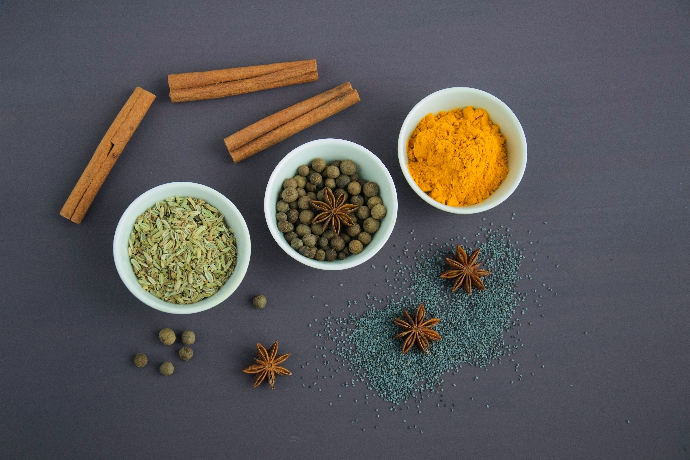

Coconut Chicken Curry
Prepare to relish the incredible Creamy Coconut Chicken Curry—a scrumptious and nutritious delight cooked effortlessly in a single pot. The best part? It's ready in just 30 minutes! Say goodbye to take-out because this mouthwatering dish is destined to become your family's new beloved recipe.

Ingredients You'll Need
- Chicken – Bite-sized pieces of skinless, boneless chicken for convenience and ease of consumption.
- Olive Oil – Opt for the rich flavor of olive oil to saute our ingredients, although a lighter alternative like canola oil can also be used.
- Spices – A touch of curry powder is all that's required to enhance the delectable flavors of this dish.
- Garlic – Adjust the amount of garlic to your preference, whether you prefer a subtle or robust garlic taste.
- Onion – Finely chopped onion ready to be sauteed until it reaches a perfect translucent state.
- Tomatoes – Incorporate a can of diced tomatoes and some tomato paste to infuse the dish with a delightful acidity. Fire-roasted tomatoes can be used for an extra burst of flavor, if available.
- Coconut milk – A single can of coconut milk is all it takes to achieve a lusciously creamy and coconut-infused curry.
- Sugar – Add a hint of sweetness to balance the savory and acidic flavors. Granulated white sugar works well in this recipe.
- Chicken broth – Opt for low-sodium chicken broth to control the overall sodium content of the curry.
- Seasoning – Adjust the salt and pepper to taste, allowing you to fine-tune the seasoning according to your preferences.
Check out the video below for the ingredients:
How to make Coconut Chicken Curry
- Prepare the chicken: In a spacious skillet or Dutch oven, heat up the olive oil. Introduce the chicken to the Dutch oven and season it with salt and pepper. Cook for approximately 5 minutes or until the chicken is no longer pink.
- Complete the dish: Add the onion, garlic, and curry powder, then stir everything together. Continue cooking for an additional 2 minutes before including the chicken broth, coconut milk, tomatoes, tomato paste, and sugar. Thoroughly combine all the ingredients, bring the mixture to a boil, and cover with a lid. Reduce the heat and let it simmer for another 15 to 20 minutes.
- Enhance and serve: Sprinkle some parsley as a garnish and serve the dish over a bed of rice..
Check out the video below on how to make your curry:
What else can I add to my curry?
Curry serves as an ideal blank canvas, allowing you to infuse an array of incredible flavors, textures, and ingredients to create a customized culinary masterpiece for yourself or your loved ones. Let's make use of the ingredients currently occupying valuable pantry space and transform them into a delightful creation.
Veggies
- Peas
- Bell pepper
- Butternut squash
- Zucchini
- Eggplant
- Chickpeas
- Potato
Meat
- Shrimp
- White fish
- Lamb
- Beef
How to Serve
- Feel free to select your preferred rice variety. Personally, I enjoy preparing a serving of light and fluffy jasmine rice, which serves as an excellent foundation for savoring this delightful mixture. Alternatively, you can opt for the aromatic and creamy goodness of coconut rice to enhance the flavors of this delicious combination.
- Naan bread
- For a traditional British classic, elevate your culinary experience by generously pouring this curry over a bed of crispy french fries.
- With zucchini noodles
Check out the video below on how to server your curry:
Nutrition Information
Serving: 1 serving
Calories: 336 kcal
Carbohydrates: 13g
Protein: 35g (70%)